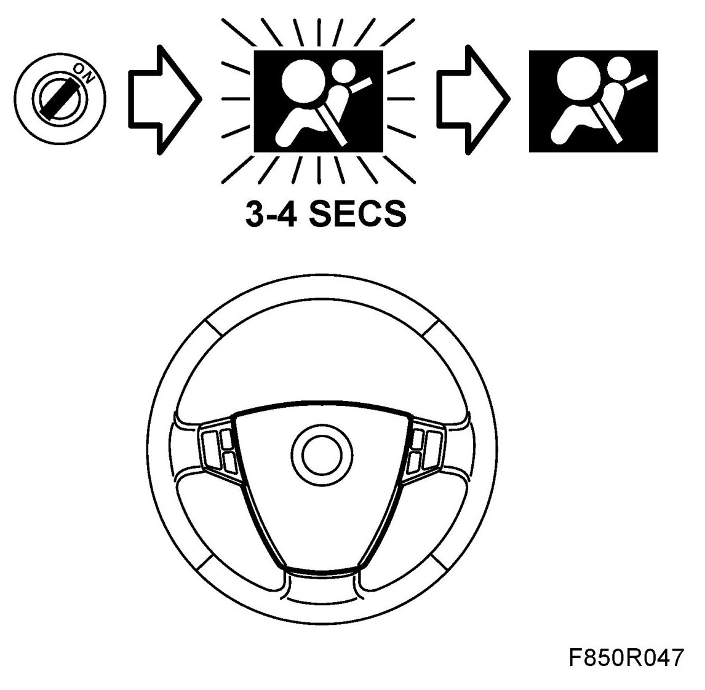

Visual Inspection of Airbag Components
Visual Inspection Of Airbag Components
1. Check the outside of the front seat backrests. They should be free from damage and holes. Additional seat covers or other equipment that can hinder side airbag deployment should not be installed.
2. Check the surface of the dashboard in front of the passenger airbag. It should be free from holes and contain no additional equipment.
3. Check the steering wheel airbag. It should be free from holes and there should be no additional equipment installed on the airbag.
4. Check along the length of the outer edges of the headlining as well as the A and C pillars. They should be free from damage and holes. Equipment that can hinder curtain deployment should not be installed.
5. Turn on the ignition. Check that the airbag lamp lights for a duration of 3-4 seconds and then extinguishes.

6. If the lamp does not extinguish, check the diagnostic trouble code and remedy the fault. See Fault diagnosis in WIS.